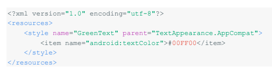
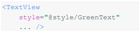
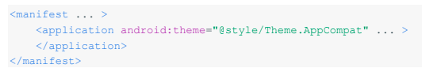
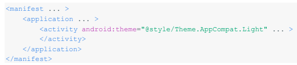
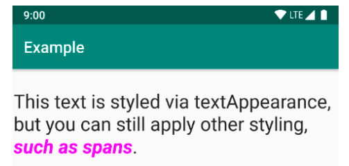
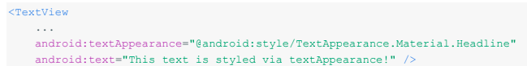
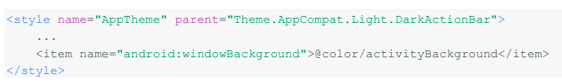
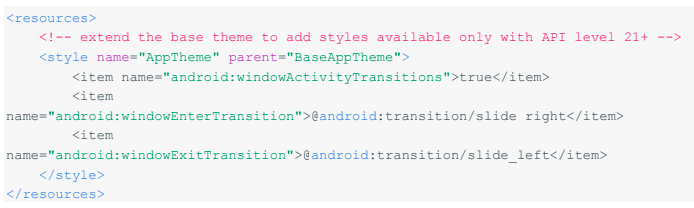
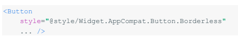
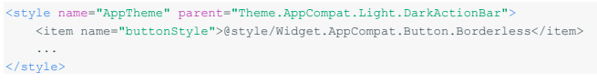

Estilos y Temas
26 de Octubre del 2020
Estilo |
Tema |
| Un estilo es una colección de atributos que especifican la apariencia de un solo estilo Vie Un estilo puede especificar antes, como el color de fuente, el tamaño de fuente, el color de fondo y mucho más. | Un tema es un tipo de estilo que se aplica a toda una aplicación, actividad o jerarquía visual, no solo a una vista individual. Cuando aplica su estilo como tema, cada vista en la aplicación o actividad aplica cada atributo de estilo que admite. |
Los estilos y temas se declaran en un recurso res/values/ que normalmente lleva el nombre styles.xml.
Crea y aplica un estilo
Para crear un nuevo Estilo o Tema , abrir su archivo res/values/style.xml.
para cada estilo que desee crear, siga estos pasos:
El NOMBRE en cada elemento especifica un atributo que de otro modo usaría como atributo XML en su diseño. El valor del elemento del artículo es el valor de ese atributo. Por ejemplo, si define el siguiente estilo:
puede aplicar el estilo a una vista de la siguiente manera:
Amplíe y personalice el estilo
Al crear sus propios estilos, siempre debe extender un estilo existente desde el marco o la biblioteca de soporte para mantener la compatibilidad con los estilos de la interfaz de usuario de la plataforma. Para extender un estilo, especifique el estilo que desea extender con el atributo principal. Luego puede anular los atributos de estilo heredados y agregue nuevos.
Aplicar un estilo como tema
Puede crear un tema de la misma manera que crea estilos. La diferencia es cómo lo aplica: en lugar de aplicar un estilo con el atributo de estilo en una vista, aplica un tema con el atributo android: theme en la etiqueta
Por ejemplo,se explica cómo aplicar el tema "oscuro" del diseño de materiales de la biblioteca de compatibilidad a toda la aplicación:
y aquí se explica cómo aplicar el tema claro a una sola actividad: 
Jerarquía de estilo
Android proporciona una variedad de formas de establecer atributos en su aplicación de Android. Por ejemplo, puede establecer atributos directamente en un diseño, puede aplicar un estilo a una vista, puede aplicar un tema a un diseño e incluso puede establecer atributos mediante programación.
Al elegir cómo diseñar su aplicación, tenga en cuenta la jerarquía de estilos de Android.
En general, deberías utilizar temas y estilos tanto como sea posible para mantener la coherencia. Si ha especificado los mismos atributos en varios lugares, la lista siguiente determina qué atributos se aplican en última instancia:
1. Aplicar estilo a nivel de carácter o párrafo a través de intervalos de texto a clases derivadas de TextView
2.Aplicar atributos mediante programación
3. Aplicar atributos individuales directamente a una vista
4. Aplicar un estilo a una vista
5. Estilo predeterminado
6. Aplicar un tema a una colección de Vistas, una actividad o toda la aplicación
7. Aplicar cierto estilo específico de Vista, como establecer TextAppearance en una vista de texto
Apariencia del texto
Una limitación de los estilos es que solo puede aplicar un estilo a una vista. En un TextView, sin embargo, también puede especificar un atributo Textåppearance que funciona de manera similar a un estilo, como se muestra en el siguiente ejemplo:
TextAppearance le permite definir un estilo específico de texto mientras deja el estilo de una vista disponible para otros usos. Sin embargo, tenga en cuenta que si define cualquier atributo de texto directamente en la vista o en un estilo, esos valores anularán los valores de TextAppearance.
TextAppearance Admite un subconjunto de atributos de estilo que: textView ofrece. Para ver la lista completa de atributos,ver TexAppearance
Personaliza el tema predeterminado
Cuando creas un proyecto con Android Studio, aplica un tema de diseño de materiales a tu aplicación de forma predeterminada, como se define en el archivo styles.xml de tu proyecto. Este estilo AppTheme extiende un tema de la biblioteca de soporte e incluye anulaciones para los atributos de color que utilizan los elementos clave de la interfaz de usuario, como la barra de la aplicación y el botón de acción flotante (si se usa). Para que pueda personalizar rápidamente el color de su aplicación diseño actualizando los colores proporcionados.
Observe que los valores de estilo son en realidad referencias a otros recursos de color, definidos en el archivo res / values / colors.xml del proyecto. Ese es el archivo que debes editar para cambiar los colores. Pero antes de comenzar a cambiar estos colores, obtenga una vista previa de sus colores con la herramienta Color del material. Esta herramienta le ayuda a elegir colores de la paleta de materiales y obtener una vista previa de cómo se verán en una aplicación.

Y luego puede anular cualquier otro estilo que desee. Por ejemplo, puede cambiar el color de fondo de la actividad de la siguiente manera:
| Para obtener una lista de atributos que puede usar en su tema, consulte la tabla de atributos en R.styleable.Theme. Y al agregar estilos para las vistas en su diseño, también puede buscar atributos mirando la "tabla de atributos XML en las referencias de dass de vista. | La mayoría de los atributos se aplican a tipos específicos de vistas y algunos se aplican a todas las vistas. Sin embargo, algunos Atributos del tema enumerados en R.styleable El tema se aplica a la ventana de actividad, no a las vistas en el diseño. | La biblioteca de compatibilidad de Android también proporciona otros atributos que puede usar para personalizar su tema extendido desde AppCompat (como el atributo colorPrimary que se muestra arriba). |
| Por ejemplo, todas las vistas admiten atributos XML desde la clase de vista base | Por ejemplo, windowBackground cambia el fondo de la ventana y ventana Entertransition define una animación de transición para usar cuando se inicia la actividad (para detalles, consulte Iniciar una actividad con una animación) | Estos se ven mejor en el archivo attrs xml de la biblioteca |
Agregar estilos específicos de la versión
Si una nueva versión de Android agrega atributos de tema que desea usar, puede agregarlos a su tema sin dejar de ser compatible con versiones anteriores. Todo lo que necesita es otro archivo styles.xml guardado en un valor, directorio que incluye el calificador de la versión del recurso. Por ejemplo:
res/values/styles.xml.
#themes for all versions
res/values-v21/styles.xml.
#themes for API level 21+ only
Debido a que los estilos en el archivo values / styles.xml están disponibles para todas las versiones, sus temas en values-21 / styles.com puede heredarlos. Como tal, puede evitar la duplicación de estilos comenzando con un "tema base y luego extendiéndolo en los estilos específicos de su versión.
Luego agregue los estilos específicos de la versión en zes / values-v21 / styles.xml de la siguiente manera:
Ahora puede aplicar AppTheme en su archivo de manifiesto y el sistema selecciona los estilos disponibles para cada versión del sistema. Para obtener más información sobre el uso de recursos alternativos para diferentes dispositivos.
Personalizar estilos de widgets
Cada widget en el marco y la biblioteca de soporte tiene un estilo predeterminado. Por ejemplo, cuando diseña su aplicación usando un tema del soporte Ibrary, una instancia de Button se diseña usando el estilo del widget AppCompat.Button. Si desea aplicar un estilo de widget diferente a un botón, puede hacerlo con el atributo de estilo en su archivo de diseño. Por ejemplo, lo siguiente aplica el estilo de botón sin bordes de la biblioteca:
Y si desea aplicar este estilo a todos los botones, puede declararlo en el buttonStyle de su tema como sigue:
También puede extender los estilos de widget, al igual que extender cualquier otro estilo, y luego aplicar su estilo de widget personalizado en su diseño o en su tema.
Para descubrir todos los estilos de widgets alternativos disponibles en la biblioteca de soporte, consulte la referencia de estilo R. para los campos que comienzan con Widget. (Ignore los estilos que comienzan con Base Widget.) Recuerde reemplazar todos los guiones bajos con puntos cuando use el nombre del estilo en sus recursos.